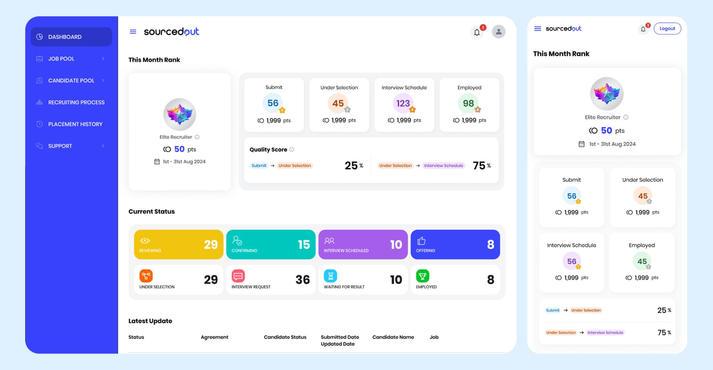
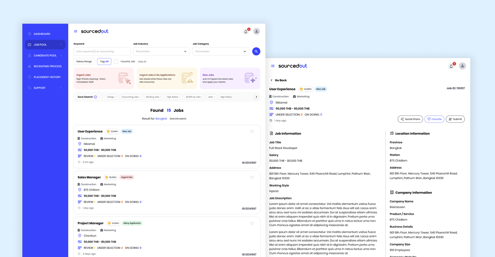
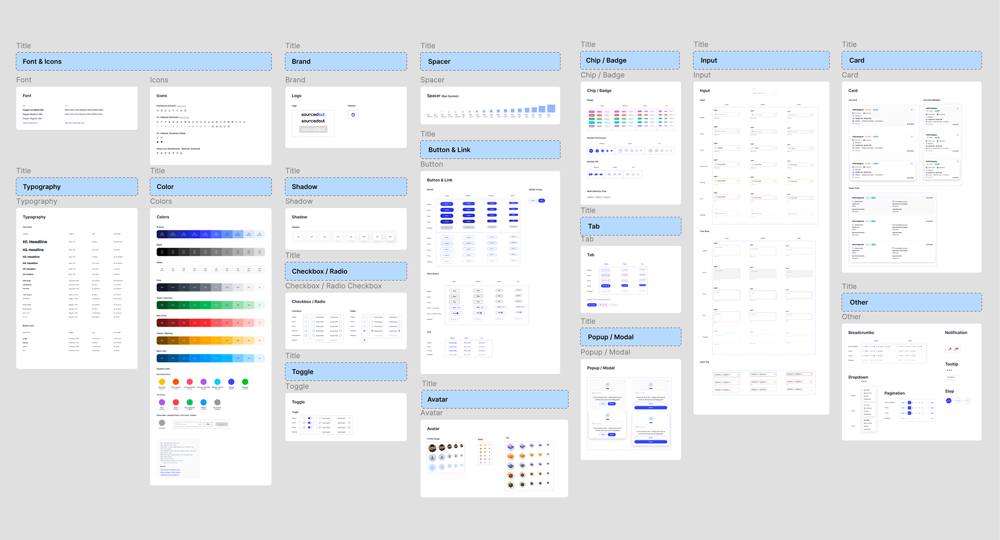

01. Overview
SourcedOut connects Reeracoen’s client job openings with freelance recruiters who source and recommend candidates. Recruiters can browse roles, assess whether a job fits their expertise, find and screen candidates, submit candidate profiles, and track progress. They receive an incentive when a referred candidate is successfully hired.
The platform also supports an approval step: recruiters submit their details for review, and approved applicants receive an account before starting work.

02. Problem
SourcedOut brings together several parties: freelance recruiters, candidates, Reeracoen’s support team, and hiring companies. Recruiters need to choose suitable roles, confirm candidate fit, and make complete submissions. After that, they need to understand what is happening while Reeracoen and the client manage the later hiring steps.
The product challenge was to make this distributed process clear and manageable for recruiters—from getting approved to tracking a candidate through a successful placement.
03. Key UX Challenges
"How might we help experienced recruiters find suitable openings, recommend qualified candidates, and follow progress with confidence—all within a flexible freelance workflow?"
The interface needed to help recruiters make good decisions at each stage, while keeping the candidate and job information needed for a responsible submission easy to find.
Clarify eligibility and approval
Explain how registration review works, what approval means, and when recruiters can access job opportunities.
Make relevant jobs easier to find
Help recruiters scan new and urgent openings, apply filters, save searches, and return to favorite roles.
Support confident job selection
Present enough role context—such as salary, location, requirements, and client insights—for a recruiter to assess fit before sourcing.
Make it easy to distinguish a new candidate from someone in the recruiter’s candidate pool, and check key details before sending a profile.
Keep progress visible
Show recruitment status and updates so recruiters can follow their recommendations without relying on manual follow-up.

04. Design Process
I organized the interface around the recruiter’s end-to-end workflow, focusing on job discovery, clear decision support, complete candidate submissions, and visible progress.
Map the service workflow
I mapped the recruiter journey from registration and approval through job selection, sourcing, candidate submission, recruitment updates, and successful hire. This made clear where the recruiter’s work ends and where the SourcedOut team or client takes over.
Structure job discovery around recruiter needs
I designed the Job Pool to support both browsing and targeted search. Job groupings such as urgent openings, new jobs, and roles with no applicants help recruiters spot where their skills may be useful. Search, filters, saved searches, and favorites support repeat use.
Give recruiters context to assess a role
The job detail screen presents role information alongside practical recruiting context, including compensation, location, requirements, interview flow, keywords, and client insights. The goal is to help recruiters decide whether they can source a suitable candidate before they begin.
Design a structured sourcing and submission flow
The candidate submission experience distinguishes between a new candidate and someone in the recruiter’s existing pool. The form captures candidate information, language ability, résumé and supporting documents, and confirmation that the candidate is interested and agrees with key job conditions.
Build consistent UI states and prepare for handoff
I considered the states needed across the workflow, including saved and favorite jobs, incomplete candidate details, form validation, submission confirmation, status updates, and mobile layouts. Figma components and interaction documentation help keep patterns consistent and make behavior easier to review with developers.

05. Solution & Results
The proposed experience connects job discovery to candidate sourcing and follow-up. Recruiters can browse and filter opportunities, review the role and its recruiting context, search or reuse candidates from a personal pool, and submit a candidate with key confirmations. Recruitment-process views and notifications then help them follow progress after handoff.
The design outcome is a structured recruiter workflow that supports better-informed job selection, more complete candidate recommendations, and clearer visibility into recruitment progress. The Figma flow also covers registration review and approval, reflecting the platform’s gated onboarding model.